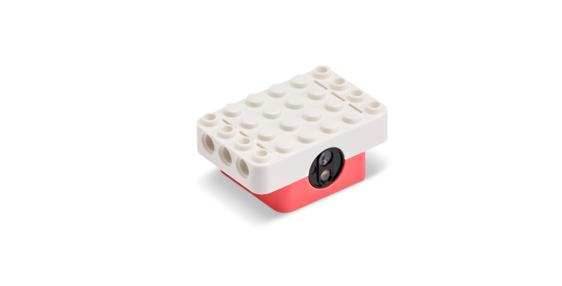
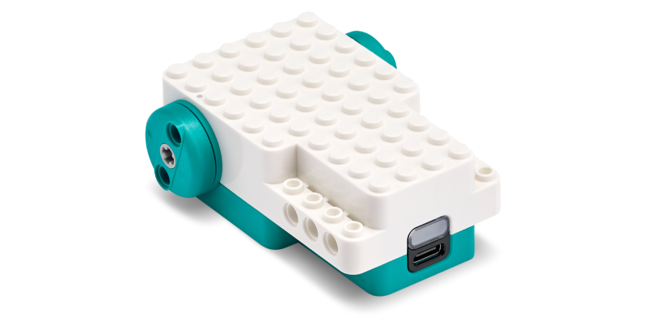

Place a coded marker
Each crossing has a colour patch. The patch can be named by a fruit or animal so the rule is easier to remember: apple, frog, whale, lemon, panda.
07/07 project concept
A LEGO robot uses a colour sensor at each crossing. Fruits or animals act as memorable proxy labels for the colour code. A KNN model compares each new sensor reading with recorded examples and chooses the motion the robot should perform.


System idea
Each crossing has a colour patch. The patch can be named by a fruit or animal so the rule is easier to remember: apple, frog, whale, lemon, panda.
The user scans each marker several times and labels the expected movement: left, right, straight, reverse, or stop.
When the robot reaches a junction, the colour sensor reading is compared to the closest recorded samples.
The selected class becomes a motor command. The robot turns, drives forward, or reverses based on what the nearest examples say.
Background
K-nearest neighbours is a simple supervised learning method. It does not build a complex equation during training. Instead, it stores labelled examples and makes decisions by looking at the closest examples to a new input.
red value
green value
A colour reading can be represented as numbers such as red, green, and blue intensity. KNN measures the distance between the new reading and previous examples. If most of the nearest examples say "turn right", the robot turns right.
Prototype UI
This panel models the user-facing part of the project. In the finished robot, the colour picker would be replaced by real readings from the LEGO colour sensor.
Choose a new sensor colour and let KNN predict the robot action.
Application
The collaboration with LEGO Education gives the project a concrete hardware base: colour-sensor readings become training data, and motor commands become visible maze decisions.
Collect several readings for each colour marker under the same room lighting.
Store each reading with its fruit or animal proxy and expected robot action.
At each maze crossing, classify the live reading using KNN.
Translate the predicted action into motor commands: forward, left, right, reverse, or stop.